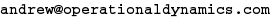
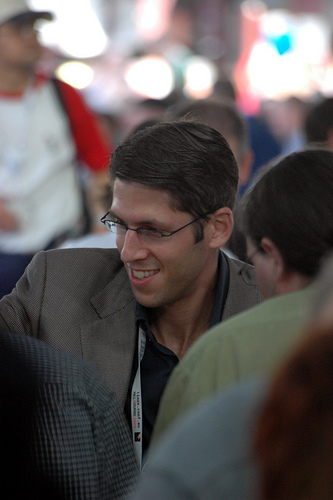

blog
Andrew Frederick Cowie
rmc, BEng. MCASI, MACS


Andrew Cowie is a long time Linux user & advocate, but somewhat unusually was an infantry officer in the Canadian army, having graduated from Royal Military College with a degree in engineering physics. He saw service across North America and a tour in Bosnia. He later ran operations for an mobile internet company in Manhattan and was a part of recovering the firm after the Sept 11 attacks.
Andrew spent many years as a management consultant with Operational Dynamics, helping a worldwide clientèle with their operations management, specializing in planning and executing major upgrades to critical infrastructure. He has significant experience solving difficult problems in uncertain and complex environments at levels ranging from the board suite to the engineers doing hands-on implementation.
More recently, Andrew was Head of Engineering at Anchor Systems, where he has designed and deployed their next generation hosting infrastructure on OpenStack. He established Haskell as the working language for all internal systems with a view to improving the calibre of software being developed and is now focused on aggressively gathering metrics and building statistical model based decision capabilities to augment monitoring, troubleshooting, and capacity planning.
Andrew is now working as a Managing Engineer in the Analytics & Information group at Commonwealth Bank.
On the technical side, Andrew is an Open Source advocate and contributed to the GNOME Desktop for many years. Past experience includes coding in C, Perl, and Java, but his recent work has concentrated entirely on the Haskell functional programming language.
Andrew has wide experience as a corporate director, having served on the boards of international organizations promoting excellence, leadership and innovation amongst youth; advocating Linux; and promoting Open Source professionals' interests.
Andrew is a frequent conference speaker, presenting about increasing the level of professionalism in the operations world, and encouraging people to get involved in the cause of freedom, both in software and in the world beyond.